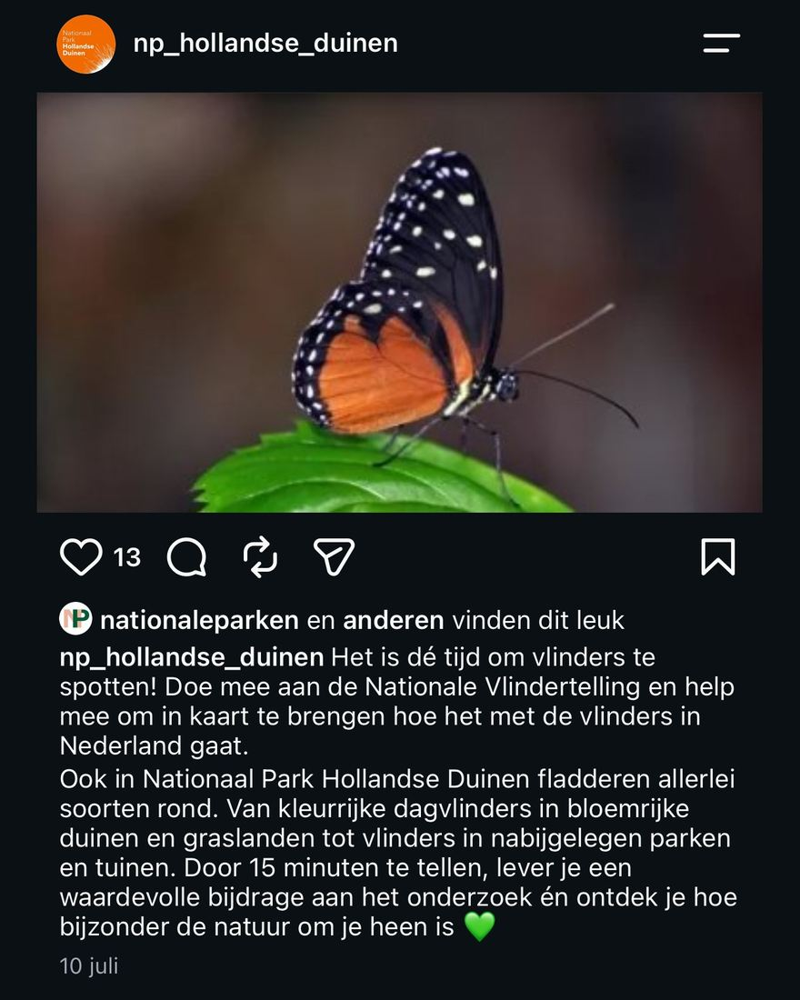

Tropische vlinder, geen Nederlandse tuinvlinder
- Op de foto
- Tithorea tarricina
- Het ging over
- Nederlandse tuinvlinder

Nationaal Park Hollandse Duinen roept op om Nederlandse vlinders te tellen. Met een vlinder uit Midden-Amerika.
Op de foto staat Tithorea tarricina, een tropische soort die voorkomt van Mexico tot Bolivia. In Nederland komt hij niet voor, en op de telkaart van de Tuinvlindertelling staat hij dan ook niet.
De rupsen leven op Prestonia, een tropisch plantengeslacht uit de maagdenpalmfamilie. Ook al niets wat in een duinvallei bij Katwijk groeit.
Wat er wel geteld werd: 108.000 vlinders in 11.000 tellingen, met atalanta, klein koolwitje en dagpauwoog bovenaan. Alle drie inheems, alle drie fotogeniek en alle drie te vinden binnen de eigen parkgrenzen.
Bron: De Vlinderstichting, Tuinvlindertelling 2026.
Correctie: eerder stond hier Heliconius hecale. Het is Tithorea tarricina, een soort uit een andere tak die er verwarrend veel op lijkt.